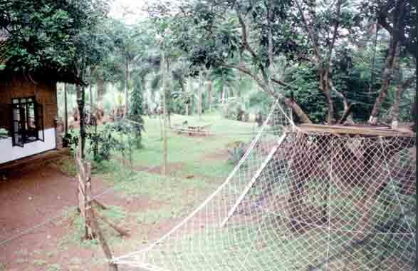
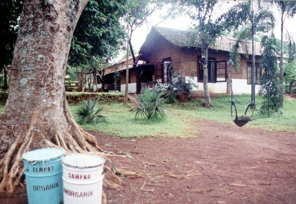
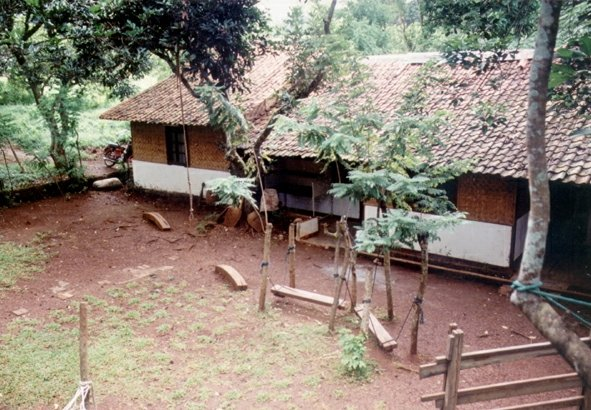
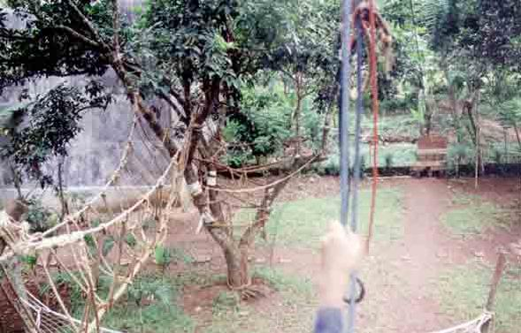
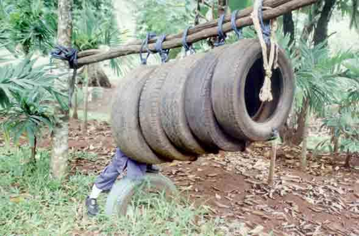
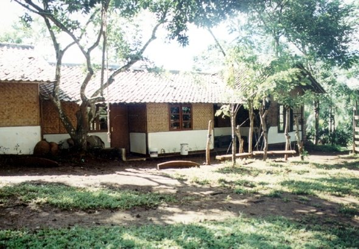

Teladan saja tidak cukup

Dalam tulisan ini, saya merenung tentang peran teladan dalam pendidikan, khususnya dalam keluarga
dan masyarakat. Saya percaya bahwa teladan adalah salah satu metode pendidikan yang paling efektif,
karena melalui teladan, nilai-nilai kebaikan bisa diterapkan dan ditiru. Namun, saya juga menyadari
bahwa teladan saja tidak selalu cukup. Ada kalanya, meskipun sudah memberi contoh baik, anak-anak
atau murid-murid tidak menuruti perintah. Saya mulai bertanya-tanya, apa yang kurang?
Ada empat pertanyaan yang mengusik pikiran saya. Pertama, apakah perintah kita dituruti? Sebagai
orang tua atau pendidik, kita harus lebih bijak dalam mengarahkan mereka untuk mengikuti perintah
dengan penuh keyakinan. Kedua, apakah marah kita ditakuti? Kita harus memastikan bahwa otoritas kita
dihormati, bukan hanya ketika kita marah. Ketiga, apakah bicara kita dipahami? Anak-anak perlu
mendengarkan dan memahami maksud kita agar pesan yang disampaikan benar-benar sampai. Keempat,
apakah nasihat kita didengar? Anak-anak membutuhkan nasihat yang bijak dan memberi mereka arah yang
jelas dalam kehidupan.
Akhirnya, saya menyadari bahwa teladan harus diimbangi dengan komunikasi yang efektif, kewibawaan
yang tegas, dan nasihat yang bermanfaat agar kita dapat benar-benar membimbing mereka menuju
perubahan yang berarti.
Rumah Kami

Rumah Belajar Ibnu Abbas, dengan pemahaman dan metode Ahlus-Sunnah wal Jama'ah, mendidik
anak untuk menghargai ilmu, mengembangkan keterampilan, penghayatan, dan penalaran
sesuai usia, serta mengamalkan hukum dan perintah Allah sebagai jalan untuk mengimani ketentuan-Nya.
Anak juga diajarkan untuk mengenal dan mengamalkan prinsip-prinsip prioritas nilai dan tindakan,
belajar dalam berbagai situasi, serta menjadi kreatif, produktif, dan ramah terhadap lingkungan.
Selain itu, Rumah Belajar Ibnu Abbas mengedukasi orangtua untuk menjadi guru bagi
anak-anaknya dan terlibat aktif dalam pendidikan, sementara masyarakat diajak untuk menghancurkan
sekat antara sekolah dan rumah serta menghargai lingkungan sebagai media belajar,
menciptakan lingkungan yang mendukung masyarakat belajar.
Jendela Pendidikan

Pendidikan bertujuan untuk menjadikan obyeknya mampu berperan dan berprilaku sesuai dengan cita-cita
termulia dan harapan-harapan terbaik yang dimilikinya. Dan karena manusia -juga jin- diciptakan
tidak lain untuk beribadah -dengan segala bentuk penghambaannya- kepada ALLAH, yang untuk itu pula
ALLAH tanamkan fitrah pada setiap manusia kecenderungan kepada kebenaran, maka pendidikan seharusnya
menjadikan manusia betul-betul tahu : siapa yang harus diibadahi olehnya dan bagaimana cara
beribadahnya.
Pendidikan -resmi tidak resmi- pasti menyangkut unsur: Asas, Tujuan, Materi, Metode, Sarana, dan
Pelakunya. Maka, ke arah -menjadikan manusia betul-betul tahu : siapa yang harus diibadahi olehnya
dan bagaimana cara beribadahnya- itulah keenam unsur pendidikan di atas satu persatu -sebelum secara
terpadu- diukur dan dinilai, apakah ia mendekatkan manusia kepadanya atau justru sebaliknya.
Jendela Pendidikan rumah belajar Ibnu Abbas merupakan media yang dengannya berbagai unsur dan
masalah pendidikan dibicarakan. Jendela ini sengaja dibuka untuk -melaluinya- mengarahkan yang di
dalam melihat ke luar, sekaligus mempersilahkan yang di luar jendela melongok ke dalam.
Jendela Anak

Anak -menurut pengertian bahasa maupun istilah- adalah keturunan, seorang yang masih kecil, atau
bagian kecil dari kesatuan yang lebih besar. Karenanya, kata anak tidak hadir sendiri kecuali
bersamaan dengannya terkait -dinyatakan atau tidak- dengan kata induk atau orangtua. Artinya,
“kehadirannya” telah didahului, dan ia tak bisa lepas dari yang mendahuluinya itu, selamanya.
Setiap diri kita adalah anak, anak manusia atau keturunan seseorang. Dari pengertian ini saja
cukuplah bagi kita untuk menyadari bahwa kehadiran dan perilaku kita, yang tidak lain diciptakan
untuk beribadah -dengan segala bentuk penghambaannya- kepada ALLAH semata, senantiasa terkait dengan
induk, orangtua, atau kesatuan yang lebih besar. Di dalam rangka inilah ALLAH Subhaanahu wa ta’alaa
mengamanahi hamba-Nya untuk mendidik anak-anak mereka dan memberi wasiat kepada mereka untuk
berbakti kepada orangtuanya.
Di dalam perjalanan hidupnya, seorang anak akan senantiasa berhadapan dengan perkara-perkara yang
menyangkut urusan:
- Berbakti kepada Orangtua.
- Bergaul dengan sesama mereka, baik yang sebaya maupun yang lebih tua atau lebih muda darinya.
- Mengatasi permasalah yang dihadapi sepanjang masa asuhannya.
jendela Anak rumah belajar Ibnu Abbas merupakan media yang dengannya berbagai masalah anak
dibicarakan. Jendela ini sengaja dibuka untuk -melaluinya- mengingatkan anak tentang kewajibannya
sebagai hamba-ALLAH, sekaligus mempersilahkan mereka yang di luar jendela melongok ke dalam. melihat
-lebih tepatnya mengintip- apa yang ada di dalam kamar mereka dan apa saja yang mereka kerjakan di
sana.
Jendela Risalah

Pendidikan bukanlah sekadar lembaga seperti sekolah, pesantren, atau perguruan tinggi, melainkan
sebuah proses yang mencakup pengambilan, penyerapaan, dan pengamalan ilmu, yang melibatkan
keterampilan, penghayatan, dan penalaran. Pendidikan tidak terbatas pada tempat dan waktu, karena
kebutuhan manusia akan ilmu tidak ada habisnya. Keluarga sebagai lembaga pendidikan pertama
memainkan peran utama dalam membentuk anak, dimulai dengan mengajarkan pentingnya ilmu, pendidikan,
dan rasa hormat terhadapnya. Orangtua juga bertanggung jawab mengembangkan keterampilan,
penghayatan, dan penalaran anak sesuai usia, agar anak tumbuh dengan kepribadian yang seimbang.
Selain itu, orangtua harus memastikan anak mampu memahami dan melaksanakan perintah Allah sebagai
jalan untuk memahami kehendak-Nya, melalui pembiasaan dalam kehidupan sehari-hari seperti wudhu,
sholat, doa, dan pengajaran Al-Qur'an, yang akan membentuk pola pikir dan kepribadian anak dalam
menjalani kehidupan yang sesuai dengan ajaran agama.
Jendela Orangtua

"Wahai para orangtua, Allah Subhaanahu wa ta’alaa memerintahkan untuk mengesakan-Nya dalam ibadah
dan mengingat-Nya, serta bersyukur kepada-Nya. Allah juga mengingatkan kita untuk bersyukur atas
nikmat yang diberikan-Nya, termasuk kepada orangtua, dan berdoa agar kita dapat berbuat amal sholeh
yang diridhai-Nya. Selain itu, Allah memerintahkan kita untuk menjaga diri dan keluarga dari api
neraka, dan Nabi Muhammad –Shallallahu alaihi wa sallam– menegaskan bahwa setiap orangtua
bertanggung jawab atas pendidikan dan pengasuhan anak-anak mereka, yang dilahirkan dalam keadaan
fitrah. Tanggung jawab besar ini menuntut orangtua untuk menjaga fitrah anak-anak mereka agar
senantiasa cenderung kepada kebenaran dan Tauhid, mendidik mereka untuk menjadi hamba Allah yang
pandai bersyukur, dan menyelamatkan mereka dari api neraka dengan pendidikan yang benar. Jendela
Orangtua Rumah Belajar Ibnu Abbas menjadi media untuk mengingatkan para orangtua akan kewajiban
besar ini dalam mendidik dan mempersiapkan masa depan anak-anak mereka."
Galeri Rumah Belajar Ibnu Abbas
Rumah Belajar Ibnu Abbas adalah sarana belajar yang sangat asri,tapi itu hanyalah dahulu, sebelum
adanya banyak bangunan yang mengitari. Berikut foto-fotonya: